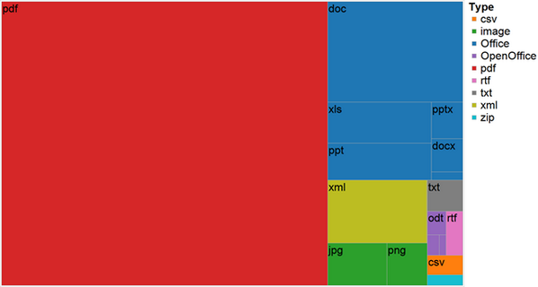
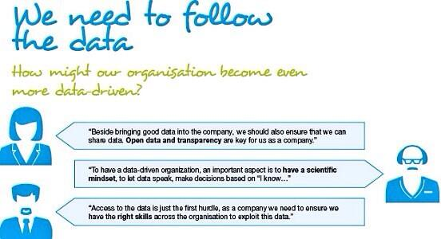
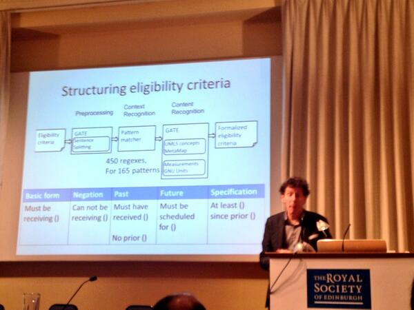
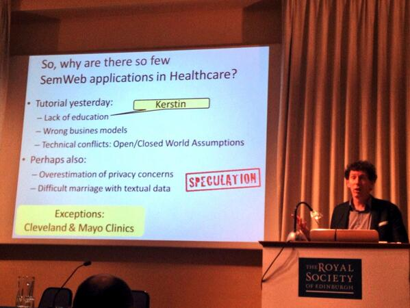
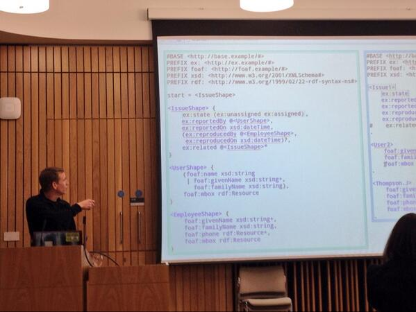
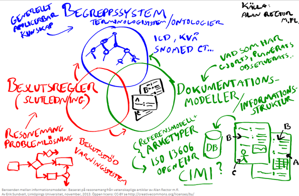
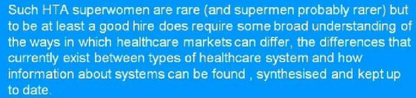

December 2013
My most popular blog post of 2013: Talking to machines kerfors.blogspot.se/2013/03/talkin… featuring @bengoldacre @mavergames
Leading voices in #SemanticWeb, #LinkedData, Sentiment Analytics on the Highlights of 2013 semanticweb.com/good-bye-2013_… via @ericaxel
I learned about Semantic Versioning semver.org when reading @GrahameGrieve's blog about #FHIR healthintersections.com.au/?p=1823
@gotsemantics I like: "Data reasonably structured to allow automated processing” opengovdata.io/2012-02/page/5… Any good ref for "interpretable"?
The frightening dominance of PDFs blog.scraperwiki.com/2013/12/the-ty… “Cuz it sucks getting data out of PDFs” -@chadskelton

#SemanticWeb Job: IBM ift.tt/1cWWiKR “Enrich enterprise databases with new information utilizing semantic integration technologies”
“big data makes it feasible for a machine to ask and validate interesting questions humans might not consider” m.cacm.acm.org/magazines/2013…
My post on AZ Culture Jam continued: "need to go beyond publishing data only as PDFs/HTML to avoid problems like: propublica.org/nerds/item/hea… "
My post #OpenData Transparency featured on AZ Culture Jam (internal forum on company’s culture, future direction)

Yes! > “@Rchards: Can open data work for the private sector? mobile.cio.co.uk/insight/data-m… ” via @JeniT
@bengoldacre @psychemedia @drcjar +1, I've argued publically and internally: publish structured payment data upfront kerfors.blogspot.se/2010/12/corpor…
MT @Amplify: Q&A w/ @zephoria on her new book: It's Complicated: The Social Lives of Networked Teens ow.ly/rTaqq (ping @PrGrPa)
Working title of @bengoldacre's Bad Pharma was: The Info Architecture of Medicine has Several Interesting Flaws.. badscience.net/2013/12/free-h…
MT @ericaxel: #itjob Healthwise ift.tt/1fFHnIT <- System Engineer Familiarity w/ #SemanticWeb standards, RDF and OWL, highly desired
Computer-interpretable Clinical Guidelines papers journals.elsevier.com/journal-of-bio… via @jessiet1023 #SemanticWeb #informatics (ping @DsvrD)
Nice to see a #ClinTech2014 session about @CDISC and @TransCelerate with #SemanticWeb in the title cbinet.com/sites/default/…
The other day I tweeted nice quotes from @UCSFChancellor taken from onforb.es/18Rccsb, yesterday she became CEO of @gatesfoundation
MT @fhuszar: Tabular: A Schema-driven probabilistic pgm/query language @MSFTResearchCam research.microsoft.com/apps/pubs/defa… <- similar to MIT's BayesDB?
I'm too tired, will catch up tomorrow -> MT @matthewherper: I'm moderating a chat about clinical trials with @MichaelJFoxOrg #foxchat
Excellent -> MT @JohnSharp: The [medical] conference is dead, long live the [medical] conference by @lenstarnes slideshare.net/lenstarnes/fut…
Good for the new year :-> RT @mrogati: E-mail me if I don't work out in 3 days - an @IFTTT recipe for @Jawbone UP ifttt.com/recipes/91613
Health Technology Assessment MOOC #htamooc sheffield.ac.uk/scharr/prospec… done and certificate downloaded
“capture data in a more portable and meaningful way” -@UCSFChancellor onforb.es/18Rccsb <- i.e as #LinkedData #SemanticWeb
“I’ll volunteer my data, only if you share it” -@UCSFChancellor in From FitBits To Clinical Studies onforb.es/18Rccsb by @matthewherper
Excellent article/video -> MT @matthewherper: From FitBits To Clinical Studies: How Big Data Could Change Medicine onforb.es/18Rccsb
"What is Data Normalization?" Interesting Clinical Architecture blog post by @clinarch clinicalarchitecture.com/blog/clinical-…
Last task in the #htamooc sheffield.ac.uk/scharr/prospec… How HTA in my country Great resource @ISPORorg's HTA Roadmap Sweden ispor.org/htaroadmaps/Sw…
MT @WestSwedenTB: Here is a guide to Christmas - Swedish style: bit.ly/1cCrYqc <- Bohus Castle in my hometown
"mix data from different sources and use #SPARQL to find connections / patterns with no need to predefine schema" informationweek.com/big-data/varie…
"Schema-based vs. schema-less , RDF standards (#SemanticWeb) offer the perfect compromise: optional schemas" informationweek.com/big-data/varie…
Updated my working notes on @Storify from the #swat4ls workshop storify.com/kerfors/swat4ls Soon heading back home after 3.5 great days
Many thanks @mscottmarshall @AndSplend Albert Burger and Paulo Romano for organising a great #swat4ls workshop swat4ls.org/workshops/edin…
A lot of exciting ideas in the #swat4ls hackathon using the Shape Expressions introduced by Erik Prud'hommeaux @w3c w3.org/2013/ShEx/Prim…
Good discussions in the #swat4ls hackathon w/ @eTRIKS1 folks following up my keynote on @CDISC in RDF slideshare.net/kerfors/pushin…
@peterkz_swe @philarcher1 Good question for @gray_alasdair editor of this W3C HCLS note on Dataset descriptions docs.google.com/document/d/1zG…
RT: W3C’s Semantic Web Activity Folds Into New Data Activity semanticweb.com/w3cs-semantic-… <- Great team: @philarcher1 @JeniT @danbri
More interesting to read from @SALUSProject_EU "Study of Terminology Mapping" srdc.com.tr/projects/salus… (Thx Hong Sun, Afga, for the pointer)
Updated my working notes on @Storify from the first two days at #swat4ls storify.com/kerfors/swat4ls Today starts the hackathon.
Have a look at the feed of #FiveWordTechHorrors this morning - My fav > @dret: my metamodel beats your metamodel!
Structuring eligibility criteria (whitin one disease area) #swat4ls few.vu.nl/~annette/pdf/k…

Interesting speculations from @FrankVanHarmele at #swat4ls on why so few #SemanticWeb apps in Health Care

Following my #swat4ls keynote: Checkout my blogpost on Justification of Mappings kerfors.blogspot.co.uk/2013/09/justif…
Re. #swat4ls Lunch discussion: vocabulary terms for the Justifications of Mappings (aka Linksets) in @Open_PHACTS openphacts.org/specs/2013/WD-…
Encouraging presenters #SWAT4LS to "push back" telling the orgs behind e.g MedDRA, ATC the value of #SemanticWeb versions from source
MT @TrishWhetzel: Half of the assessment scores can be covered with a SPARQL query #swat4ls <- using OWL, more details later
Nice to see Julie Evans @CDISC name on a #SemanticWeb #swat4ls paper toger with folks from @MayoClinic (links to paper later on)
Eric Prud'hommeaux showing an example of Shapes from the RDF Validation Workshop w3.org/2012/12/rdf-va… #swat4ls

Charlie Mead: "The elephant in the room - Open World Assumption vs (XML) schema validation" #swat4ls Way forward see w3.org/2012/12/rdf-va…
Charlie Mead: "Software vendors in healthcare and clinical research should have known about #SemanticWeb at least the last 3 years" #swat4ls
Charlie Mead and Eric Prud’hommeaux are kicking off the #swat4ls tutorial on Applying #SemanticWeb in Clinical Care and Clinical Research
Sarala Wimalaratne on how #ebirdf use identifiers.org to create URIs to identify and locate scientific data #swat4ls
Lodestar is the #LinkedData Browser for #ebirdf ebi.ac.uk/fgpt/sw/lodest… developed by @simonjupp #swat4ls
Now @jamesmalone is kicking off the #ebirdf tutorial at #swat4ls Slides published on dropbox tinyurl.com/q2m2j67
On my way to Edinburgh for #swat4ls swat4ls.org/workshops/edin… Great to be able to be in a #semanticweb conference IRL this time :-)
Data Element Exchange (DEX) wiki.ihe.net/index.php?titl… Developed by Landen Bain @CDISC and Gokce B. Laleci @SALUSProject_EU
MT @edsilverman Do Drugmaker Plans To Release Clinical Trial Data Go Far Enough? forbes.com/sites/edsilver… #ctdata #alltrials
Dags for #lankadedata på @iasaswe's ITARC bit.ly/IHhnk6 ? Se kerfors.blogspot.se/2013/05/three-… Ping @bBalsa @mariegus @evabl444
#GoodPharma in @Official_EMWA's journal, editor @dianthusmed bit.ly/18Fy1NT <- Good #medicalwriting, and Good #opendata
Semantisk interop @Itivarden artikeln itivarden.idg.se/2.2898/1.53645… med bland annat @ErikSundvall <- RDF kan överbrygga

+10 MT @mfhepp: Cool: @Microsoft is really working on #SPARQL at #webscale: research.microsoft.com/en-us/projects… #SemanticWeb #RDF
.@Pharmafocus @bengoldacre I would love to work for a company brave enough to publish CSRs in C21th format kerfors.blogspot.se/2013/03/talkin… #alltrials
Need to get a view on the Swedish "HTA org" #TLV tlv.se/in-english-old… for the last assignment in the #htamooc
+1 MT @TopQuadrant: Supporting FDA/PhUSE Semantic Technology Working Group create existing @CDISC standards in RDF ow.ly/rpgVq
"If a URI is defined here [eg SNOMED-CT, LOINC], it SHALL be used in preference to any other identifying mechanisms" hl7.org/implement/stan…
Named Systems List #HL7 #FHIR "If a URI is defined here, it SHALL be used" e.g URIs for SNOMED-CT, LOINC hl7.org/implement/stan…
"Such HTA [Health Techn. Assessment] superwomen are rare (and superman probably rarer)..." < Nice quote in #htamooc

Semantic interoperability [swe] @Itivarden <- EHR experts please consider: #RDF yosemitemanifesto.org and #FHIR healthcareitnews.com/blog/interoper…
So very true -> RT @JeniT: Prompted by @timberners_lee, I've written about the Five Stages of Data Grief theodi.org/blog/five-stag…
MT @philarcher1: Hearing how kogmbh.de worked with SKF to improve doc mgmt with RDF in Open Doc format <-Interesting will check
MT @philarcher1: Event on Open Document Lifecycle in NL, everyone talking about #LinkedData as the key technology. #odl2013
MT @dr_dobbs: Applying the Big Data Lambda Arch. ow.ly/rnQi9 <- Check out @mhausenblas' VirtualBox VM drive.google.com/folderview?id=…
MT @Clin_Trials: Register now for Clinical Data Disclosure and Transparency bit.ly/1amRO1L <- Hot topic for conf.org.
+1 RT @pylastic: #interchange2013 Ravi Shankar, Biomedical Research Data moving torwards RDF: CDISC to RDF! pic.twitter.com/iAE4oGspl1
Cool sketchnote on "clinical trial data for all" given by Paul Houston of @CDISC Europe @emblebi jennycham.co.uk/?p=2205 #ctdata
MT @iswc2013: Videos from 36 sessions at #iswc2013 online videolectures.net/iswc2013_sydney <- lots of interesting material #SemanticWeb
MT @Pharmafocus: EU rethinks regulation: ow.ly/rlKUj <- We also need to take CSRs into the C21th kerfors.blogspot.se/2013/03/talkin…